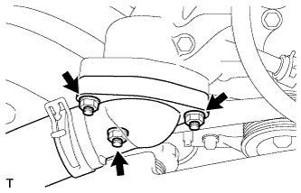

THERMOSTAT > REMOVAL |
| 1. REMOVE FRONT FENDER SPLASH SHIELD SUB-ASSEMBLY LH |
 |
Remove the 3 bolts and screw.
Turn the clip indicated by the arrow in the illustration to remove the fender splash shield.
| 2. REMOVE FRONT FENDER SPLASH SHIELD SUB-ASSEMBLY RH |
| 3. REMOVE NO. 1 ENGINE UNDER COVER SUB-ASSEMBLY |
 |
Remove the 10 bolts and No. 1 engine under cover.
| 4. DRAIN ENGINE COOLANT |

Loosen the radiator drain cock plug.
Remove the radiator cap. Then drain the coolant.
Loosen the 2 cylinder block drain cock plugs. Then drain the coolant from the engine.
Tighten the 2 cylinder block drain cock plugs.
Tighten the radiator drain cock plug by hand.
| 5. REMOVE V-BANK COVER SUB-ASSEMBLY |
 |
Remove the 2 nuts and V-bank cover.
| 6. REMOVE AIR CLEANER HOSE ASSEMBLY |
 |
Disconnect the vacuum transmitting hose and No. 2 ventilation hose.
Loosen the 2 hose clamps.
Remove the air cleaner hose.
| 7. DISCONNECT WATER INLET |
 |
Remove the 3 nuts, and disconnect the water inlet from the water inlet housing.
| 8. REMOVE THERMOSTAT |
Remove the thermostat.
Remove the gasket from the thermostat.